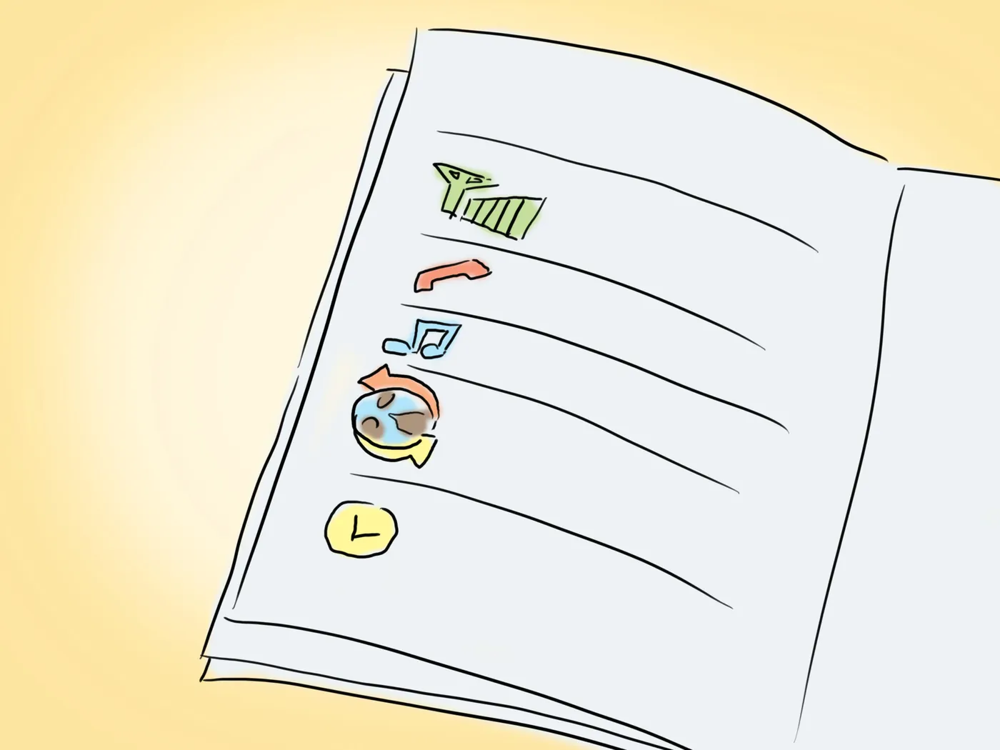
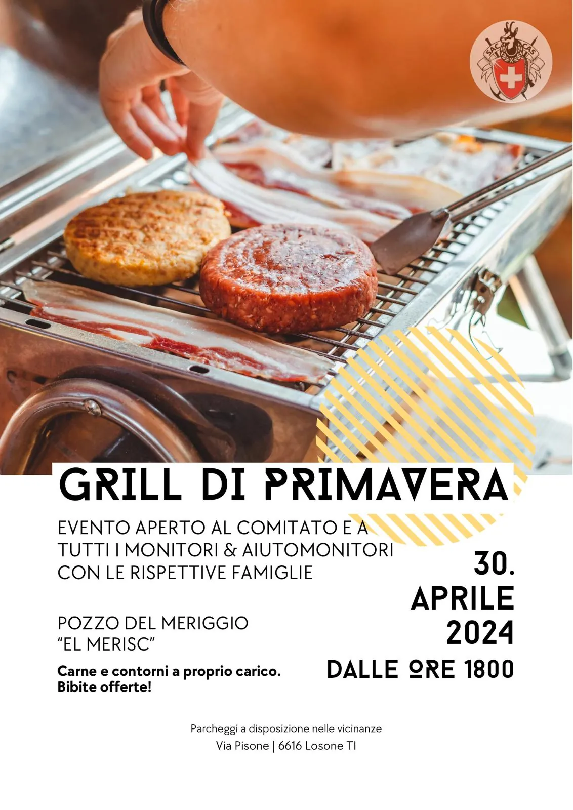

CAPIGITA – Manuale utilizzo DropTours

Per facilitare il compito dei capigita nell’utilizzo del gestionale gite, abbiamo creato un manuale utente indirizzato ai capigita per l’utilizzo di DropTours.
Il manuale è reperibile nella sezione “Programma” del menu “Attività”, tramite il pulsante denominato “CAPIGITA – Manuale DropTours”.
Altre notizie
Tutte le news
Grigliata di primavera (monitori e aiuto-monitori, aiutanti….etc)
Vi ricordiamo la grigliata dedicata a tutti i monitori, aiutomonitori e aiutanti del CAS Ticino. Iscrivetevi su droptour e invitate le vostre famiglie. Iscrizioni…

OG – Arrampicate a Finale Ligure (Italia) – PASQUA
Cari/e ragazzi/e, Desiderate partecipare alla quattro giorni di arrampicata con noi? Iscriviti sul sito del CAS Ticino: https://ssl.dropnet.ch/casticino/gite/index.php?page=detail&touren_nummer=1354. Di seguito trovate…

Lunedì 30 maggio alla Baita del Luca sono stati ricordati Luca Sganzini, Delio Ossola e Fabrizio Scanavino
Lunedì 30 maggio alla Baita del Luca sono stati ricordati Luca Sganzini, Delio Ossola e Fabrizio Scanavino in occasione della posa di 3 loro nuove foto alla presenza del fotografo e di qualche responsabile (o ex) della…